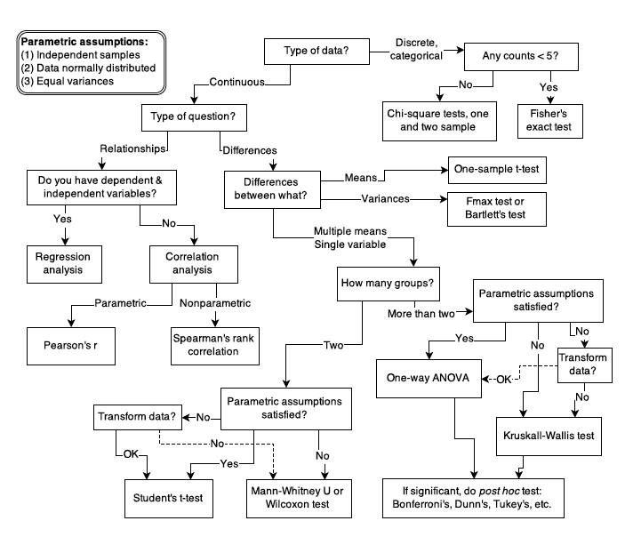
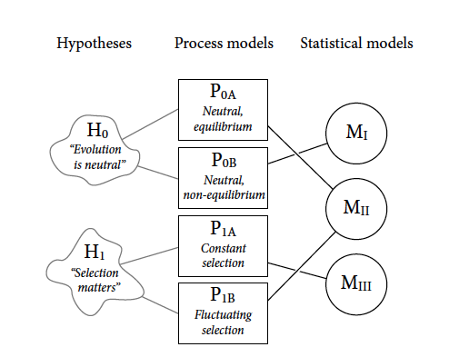

Rethinking Companion
2022-05-18
Chapter 1 The Golem of Prague
This is a companion book written in Markdown for McElreath’s Statistical Rethinking (2020). You can set up your R console by running:
install.packages(c("coda","mvtnorm","devtools","dagitty"))
library(devtools)
devtools::install_github("rmcelreath/rethinking")1.1 Statistical golems
The Golem of Prague and statistical golems (models) are powerful but lack wisdom. As McElreath tells us, there are many kinds of golems and figuring out how to build the one you need to carry out the task at hand can be tricky.
Figure 1.1 
In addition, novel research often requires novel methods and the researchers may have to stray from the common tests to engineer their own golems.
1.2 Statistical Rethinking
A lot can go wrong with statistical inference, and this is one reason that beginners are so anxious about it. When the goal is to choose a pre-made test from a flowchart, then the anxiety can mount as one worries about choosing the “correct” test.
More work is needed to ensure researchers understand all the moving parts of their golems and how to interpret their results.
1.2.1 What are we trying to do with the golems?
The popular belief is that we need to create models that use statistical means to test the null hypothesis.
Two reasons why deductive falsification doesn’t work:
- Hypotheses are not models. The relations among hypothese and different kinds of models are complex. Many models correspond to the same hypothesis, and many hypotheses corresponf to asingle model. This makes strict falsification impossible.
All models are false, but some are useful.
Figure 1.2 
Two opposing hypothesis for evolutionary change:
H0: Neutral theory (random mutation and drift)
H1: Natural selection (fitness leads to observed change)
Process models for each hypothesis:
P0a: steady state in time (null)
P0b: fluctuations in population size through time
P1a: selection favours the same alleles through time
P1b: selection preference fluctuates through time (different alleles)
Statistical Models:
Mi: unique to P0b
Mii: Power law in the data (frequency) shared expectation of P0a and P1b
Miii: unique to P1a
Note that all process models contain time, solidifying directionality
- Measurements matter. Even when we think the data falsify a model, another observer will debate our methods and measures. They don’t trust the data. Sometime sthey are right.
The colour of swans
Before Australia was discovered, all swans were white and no number of observations could prove this fact to be true.
H0: All swans are white
Australia had black swans, which instantly makes H0 false.
Remember, observations are prone to error and hypotheses are quantitative rather than discrete.
“At the edges of scientific knowledge, the ability to measure a hypothetical phenomenon is often in question as much as the phenomenon itself.”
1.3 Tools for golem engineering
You’ll wreck Prague eventually, you just need to notice the destruction.
We want our models to be able to design inquiry, extract information from data, and make predictions. To do this we will need:
- Bayesian data analysis
- Model comparison
- Multilevel Models
- Graphical causal models
1.3.1 Bayesian data analysis
Bayesian data analysis takes questions in the form of a model and produces logical probability distributions of the answer. This represents plausibility.
1.3.2 Model comparison and predictions
Model comparison is often thought of in terms of ‘which model will make the best predictions?’ Two tools for this are Cross-validation and Information Criteria.
Complex models usually make worse predictions than simple ones due to overfitting. The smarter the golem, the dumber its predictions. Fitting is easy; prediction is hard.
Session Info
sessionInfo()## R version 4.1.1 (2021-08-10)
## Platform: x86_64-apple-darwin17.0 (64-bit)
## Running under: macOS Big Sur 10.16
##
## Matrix products: default
## BLAS: /Library/Frameworks/R.framework/Versions/4.1/Resources/lib/libRblas.0.dylib
## LAPACK: /Library/Frameworks/R.framework/Versions/4.1/Resources/lib/libRlapack.dylib
##
## locale:
## [1] en_CA.UTF-8/en_CA.UTF-8/en_CA.UTF-8/C/en_CA.UTF-8/en_CA.UTF-8
##
## attached base packages:
## [1] stats graphics grDevices utils datasets methods base
##
## loaded via a namespace (and not attached):
## [1] bookdown_0.26 png_0.1-7 digest_0.6.27 R6_2.5.1
## [5] jsonlite_1.7.2 magrittr_2.0.1 evaluate_0.14 highr_0.9
## [9] stringi_1.7.3 rlang_0.4.11 rstudioapi_0.13 jquerylib_0.1.4
## [13] bslib_0.3.1 rmarkdown_2.14 tools_4.1.1 stringr_1.4.0
## [17] xfun_0.30 yaml_2.2.1 fastmap_1.1.0 compiler_4.1.1
## [21] htmltools_0.5.2 knitr_1.33 sass_0.4.0